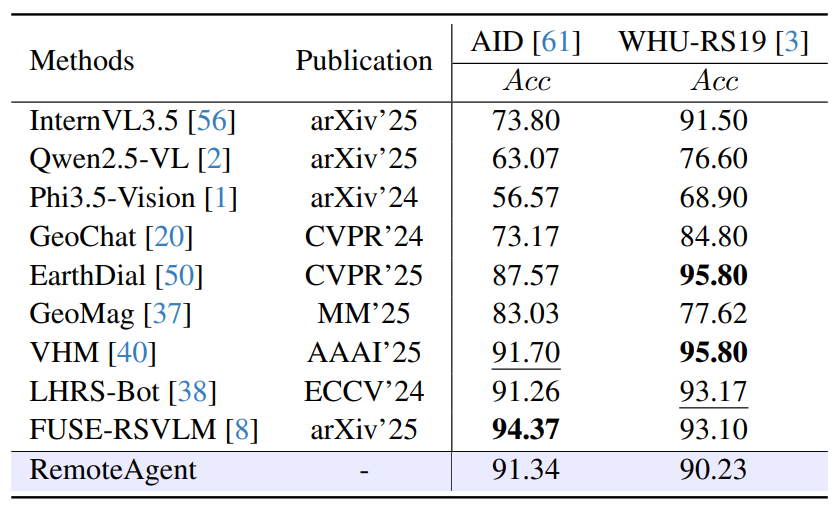
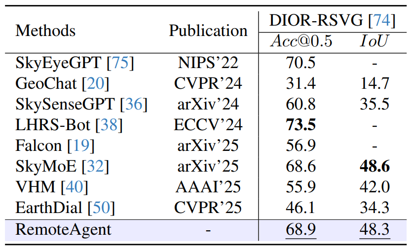
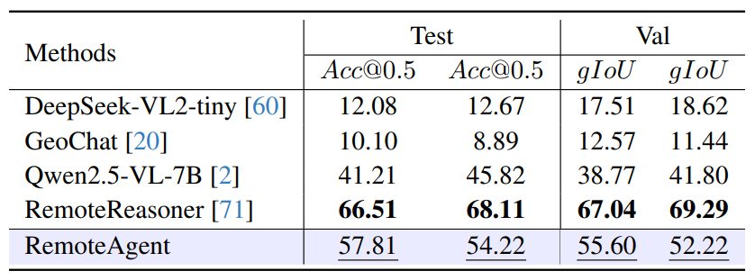
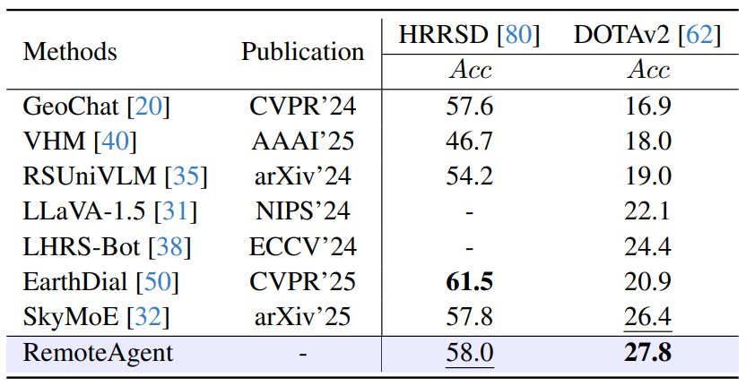
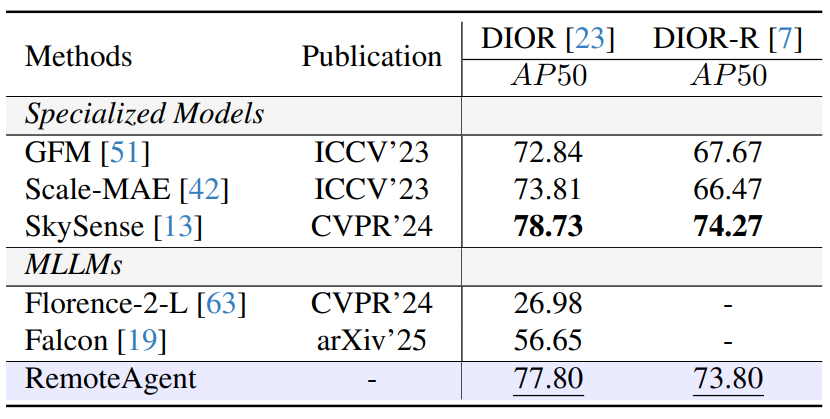
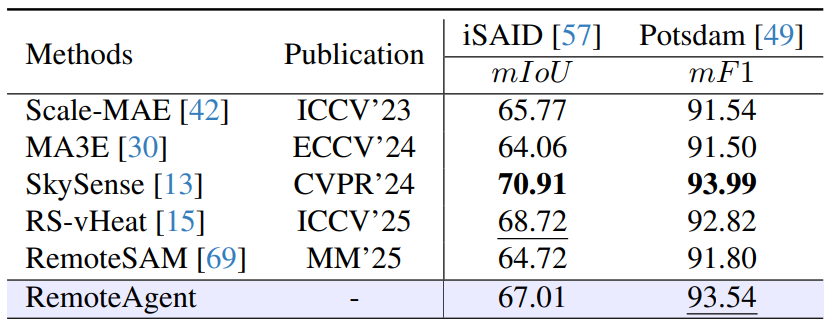
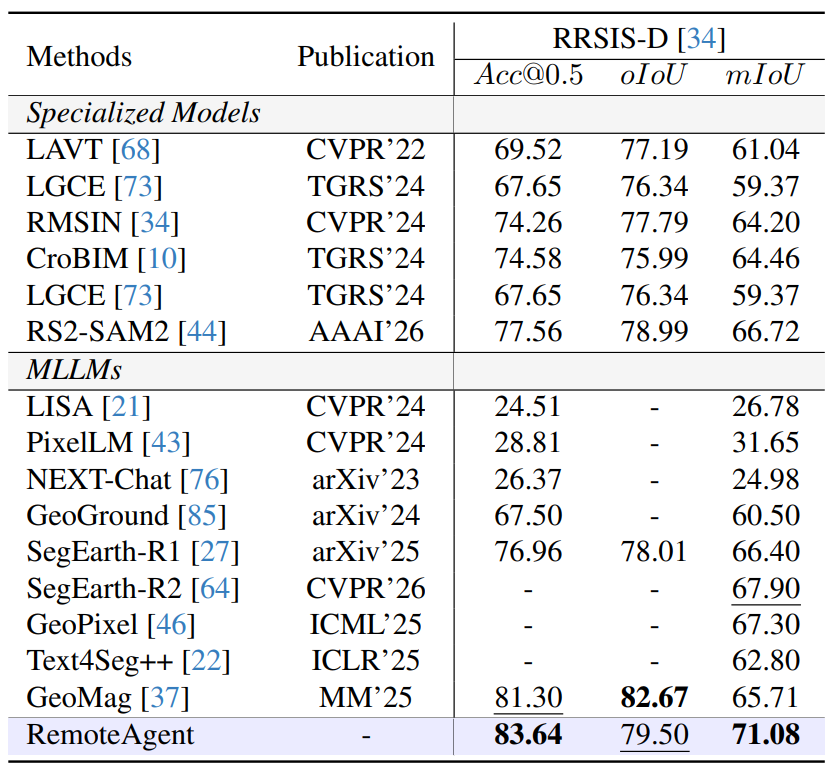
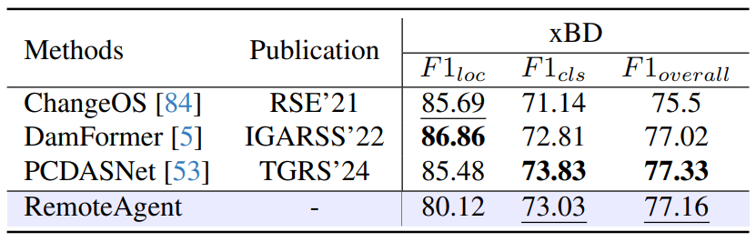

- Human-centric EO benchmark. VagueEO connects free-form user intents with standardized Earth Observation task annotations.
- Capability-aware agent. RemoteAgent uses RL alignment to resolve intrinsic tasks internally while routing dense predictions to specialized tools.
- Unified rewards. Coordinate, numerical, and textual outputs are supervised through a single GRPO-compatible reward interface.
- Holistic evaluation. Experiments show strong intent recognition, data efficiency on intrinsic tasks, and expert-level precision on extrinsic tool calls.

Intrinsic task: scene classification on AID and WHU-RS19.

Intrinsic sparse localization: visual grounding on DIOR-RSVG.

Intrinsic reasoning: geospatial region reasoning on EarthReason.

Intrinsic numerical reasoning: object counting on HRRSD and DOTAv2.

Extrinsic execution: object detection via specialized tools.

Extrinsic execution: semantic segmentation on iSAID and Potsdam.

Extrinsic execution: referring expression segmentation on RRSIS-D.

Extrinsic execution: building damage assessment on xBD.